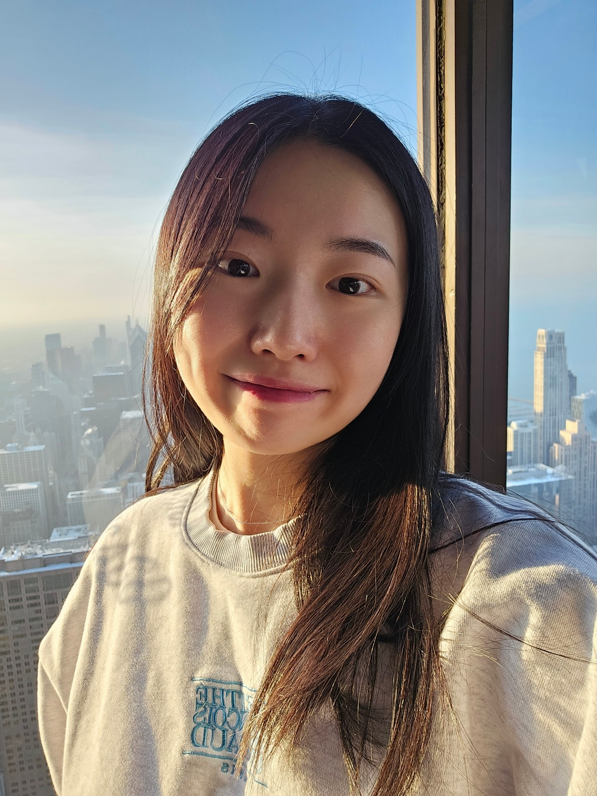
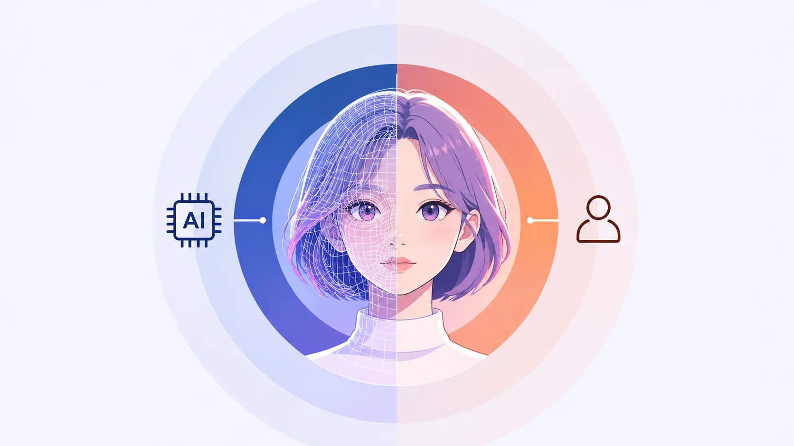

Human–AI Interaction & Perceived Autonomy
Investigating how the perceived autonomy and authenticity of AI-generated agents shape user trust, decision-making, and behavioral intentions.
Exploring how people experience, interpret, and respond to emerging technologies.

HUMAN–AI INTERACTION / UX RESEARCHI'm a doctoral student in the Institute of Communications Research at the University of Illinois Urbana-Champaign.
My research examines human–AI interaction, user trust and perception, and decision-making in digital experiences, including virtual influencers, AI agents, and autonomous mobility.
I aim to bridge academic research and industry practice through experimental design, mixed methods, and a human-centered understanding of digital experiences.
Get in touch ↗My research connects human–AI interaction, user experience, communication, and emerging technologies.
Investigating how the perceived autonomy and authenticity of AI-generated agents shape user trust, decision-making, and behavioral intentions.
Comparing AI-generated and human digital agents to understand the credibility factors behind trust and behavioral intentions.
Studying how interface messaging and digital experiences influence trust and adoption, alongside audience responses to streaming media advertising.
Selected publications and presentations can be added here as they are finalized.
Explore four research case studies, from study design to evidence and implications.

01 / HUMAN–AI INTERACTIONTwo experiments examine whether human-operated and AI-operated virtual influencers produce different consumer responses.
Explore case study →How can safety-oriented advertising address the trust barrier around autonomous taxis?
Explore case study →How do formative experiences with television advertising shape acceptance and avoidance of ads on streaming platforms?
Explore case study →How do fantasy proneness and authenticity cues shape judgments of a fictional virtual idol endorsing headphones?
Explore case study →University of Illinois Urbana-Champaign
University of Illinois Urbana-Champaign
University of Illinois Urbana-Champaign
U.S. go-to-market strategy and user research for B2B AI video search
Teaching, research communication, and behavioral data analysis
Qualtrics · SPSS · R · Python · SQL · Figma · ANOVA · Regression · SEM
Updated CV · September 30, 2026
Download CV (PDF) ↓